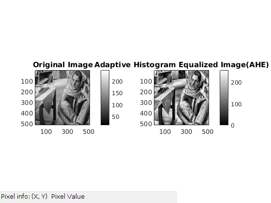
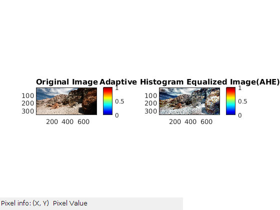

Report for Question 2 (MyMainScript)
Contents
This is the main script which calls all functions pertaining to
question2.
tic;
question 2(a)
myLinearContrastStretching('2/data/barbara');
myLinearContrastStretching('2/data/TEM');
myLinearContrastStretching('2/data/canyon');
question 2(b)
myHE('2/data/barbara');
myHE('2/data/TEM');
myHE('2/data/canyon');
question 2(c)
myAHE('2/data/barbara',160);
myAHE('2/data/TEM',160);
myAHE('2/data/canyon',160);
myAHE('2/data/barbara',300);
myAHE('2/data/TEM',300);
myAHE('2/data/canyon',300);
myAHE('2/data/barbara',50);
myAHE('2/data/TEM',50);
myAHE('2/data/canyon',50);
The first three images have AHE done using optimum window size i.e. 160x160.
The next three images have AHE done using significantly larger window size i.e. 300x300 and the
last three images have AHE done using significantly smaller window size i.e. 50x50.



question 2(d)
myCLAHE('2/data/barbara',80,0.025);
myCLAHE('2/data/TEM',80,0.025);
myCLAHE('2/data/canyon',80,0.025);
myCLAHE('2/data/barbara',80,0.0125);
myCLAHE('2/data/TEM',80,0.0125);
myCLAHE('2/data/canyon',80,0.0125);
toc;
Elapsed time is 2014.930761 seconds.
The first three images have CLAHE done using optimum window size i.e. 80x80 and optimum clip limit i.e. 0.025.
The next three images have CLAHE done using half the clip limit than what is optimum i.e. 0.0125.